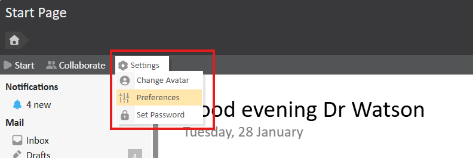
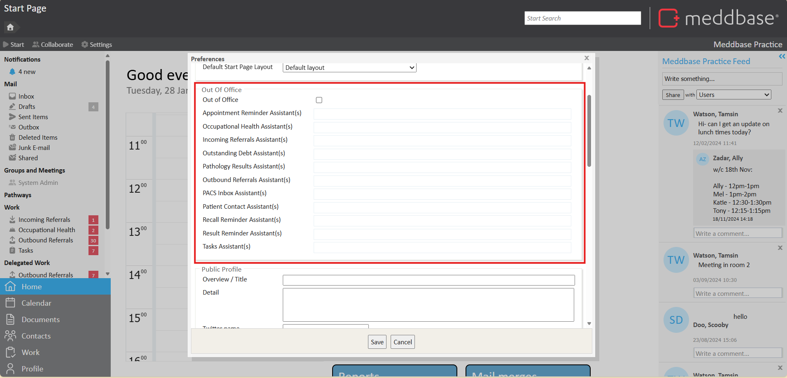
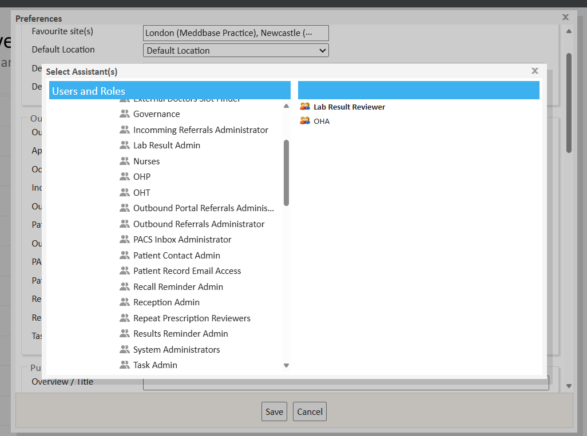

The out of office feature can be used to re-direct your work items, such as tasks, pathology results etc, to another user or role while you are away.
The out of office feature will add your chosen user or role to each work item assigned to you, allowing you to see the tasks assigned to you while you are away and allow the role or user to action them.
The out of office feature is configured on a per user basis. Each user will need to setup their own settings.
The purpose of this article is to explain how to set up Out of Office via user preferences.
The out of office feature setting can be found under the settings section of the home page.

From settings, select preferences where the preferences window will open. Scroll down to Out of Office section.

Tick the Out Of Office Check box this will activate the feature. Below this, Each work type can be configured to forward on to user or user role group.
Select your work type and a pop up window will open asking you who you’d like to forward your work items to.
Note you can select multiple users and roles.
Select your users or roles by clicking the user or role from the list on the left. The right hand section displays who you have selected.

Once you have chosen, close the Select Assistants window and then Save your preferences.
The out of office will be active until you disable it.